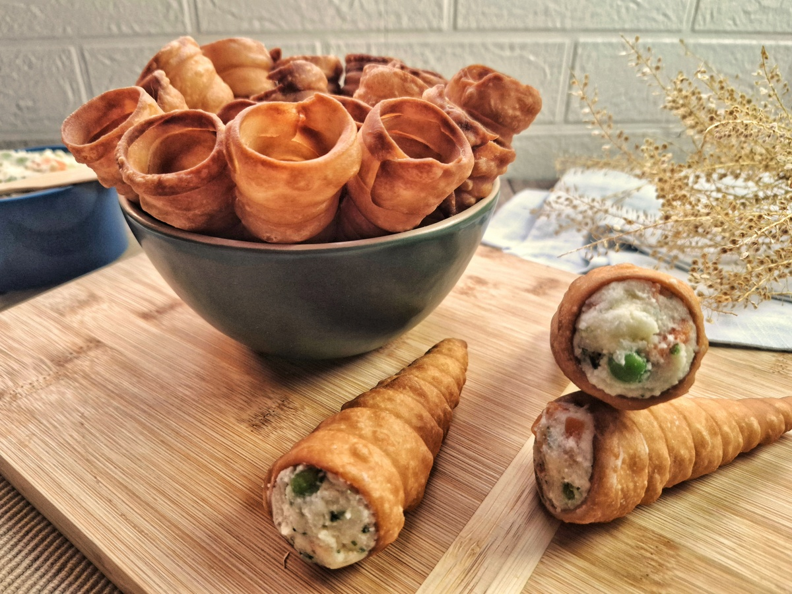

Petiscos
-
Pate

500 gramas de filé de frango desfiado (sassami),1 cenoura média ralada
1 tomate picado sem sementes, 1/2 cebola roxa picada
1/2 xícara de chá de azeitonas picadas
Salsinha picada a gosto
180 gramas de requeijão
3 colheres de sopa de azeite de oliva
Sal e pimenta-do-reino a gosto -
Canudo Recheado
Ingredientes 1 e 2/3 de xícara de chá de farinha de trigo sem fermento (250 gramas) 1 colher de café de sal 1 colher de sopa de óleo 2 colheres de sopa de vinagre de álcool 2 colheres de sopa de cachaça 100 ml de água morna Óleo para fritar
Pratos
-
Strogonoff

400g de carne (filé mignon, chã de dentro ou alcatra) Sal,1/2 cebola ralada 1 caixa e meia de creme de leite 3 colheres (sopa) de catchup 3 colheres (sopa) de extrato de tomate Óleo para fritar
-
Lasanha
500 g de massa de lasanha,carne moída 500 g de carne moída,2 caixas de creme de leite 3 colheres de manteiga,3 colheres de farinha de trigo 500 g de presunto,500 g de mussarela sal a gosto,2 copos de leite 1 cebola ralada,3 colheres de óleo 1 caixa de molho de tomate,3 dentes de alho amassados 1 pacote de queijo ralado
Sobremesas
-
Pudim
.jpeg)
1 lata de leite condensado 1 lata de leite (medida da lata de leite condensado) 3 ovos inteira 1 xícara (chá) de açúcar 1/2 xícara de água
-
Torta de limão
.jpeg)
200 g de biscoito de maisena,150 g de margarina 1 lata de leite condensado (395 g),1 caixa de creme de leite (200 g) suco de 4 limões,raspas de 2 limões 3 ou 4 claras de ovo,3 colheres (sopa) de açúcar raspas de 2 limões para decorar